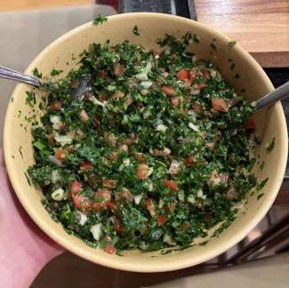
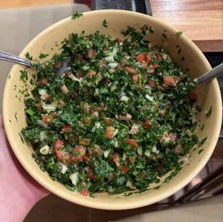
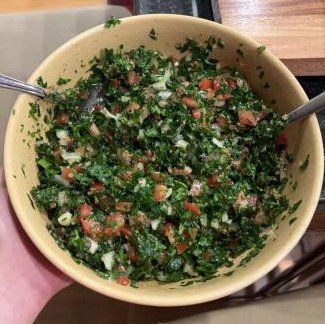

Welcome to Rami’s Delicious and Healthy Recipe page! I'm Rami and I am passionate about creating recipes that not only taste good, but are good for you. All the recipes you will find are healthier versions of common dishes that I've recreated. I like to make healthier versions of foods that are low in fat/calories, and high in protein. I also included a unique Lebanese salad that my mom made throughout my childhood. With these recipes you can eat tasty food feeling guilt free. In my experience, going out to eat would always make me feel regret, as a lot of food outside is highly processed and cooked with a lot of seed oils. Such small amounts of foods would be so high in calories due to high fat and added sugar content. The solution to this is to create foods that are high in volume and lower in calories. Throughout the summer and fall I have experimented with different ingredients and ideas to make these. I would frequently eat these as they have helped me lose fat and gain muscle. **All recipes require basic kitchen supplies and appliances such as: Oven, Stove, Air Fryer.
